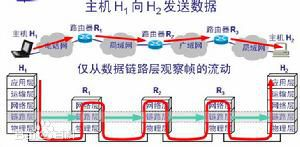
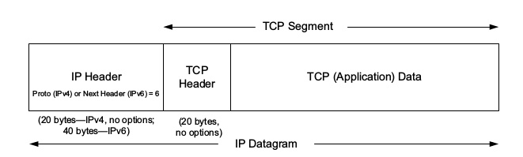
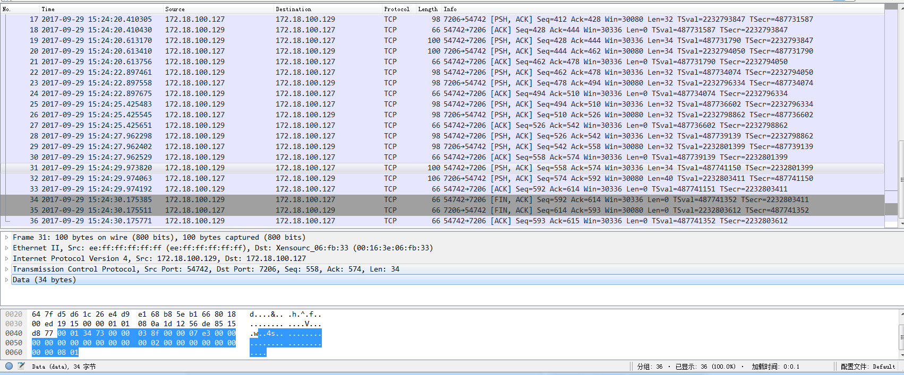

概述
由于之前所学没有系统性的对网络这块的知识也没个详细学习过程，对于http、tcp/ip这些东西还只是停留在使用层面，但具体对系统是如何实现的原理无所适从。一个东西只要
弄清楚原理后，对这东西的使用就如刨丁解牛。
对一个东西的理解不能停留在表面，也不要感性的理解一个东西，我们需要看到一个东西
本质
我们平常生活中用电脑、手机很方便的上网或和它人聊天，这里就用到一些类似http、tcp等
技术实现，不同电脑或手机能识别其它设备发过来的东西要利益于互联网以及很早以前制订的
OSI模型。
国际标准化组织ISO在1979年建立了一个分委员会来专门研究一种用于开放系统的体系结构，
提出了开放系统互连OSI模型，这是一个定义连接异种计算机的标准主体结构。


下面是自己根据现实实际情况非官方的语言版的理解:
物理层
相对于接收数据而言，是把发过来的信号转成机器识别的数据
相对于发送数据来说，是把数据转化成信号在线路上传递。
也就是说设备之间沟通的第一个媒介及其连接数据链路层
相对于维护网络中需要通信的一条路，用来传递数据，只是这个数据是以帧来定义
- 网络层
这层标识了网络中两个实体的数据用的什么协议从哪里到哪里。
- 传输层
数据的包的传送，保证消息的有序性，你抓包看到的seq ack等.我们平常用read读和写在这层
- 会话层
也不知道怎么描述
- 表示层
主要定义数据格式以及加密
- 应用层
http、telnet等都是实现了应用层
网络数据流向
一个网络数据包会经过多层路由器转发，所以下图是一个包从一个机器发出到达另外一台机器的示意图

TCP简述
大家都知道tcp是一个面向连接的，可靠的，基于字节流的位于传输层的通信协议。



其中不携带选项的TCP头如下图所示(其中阴影部分的四个字段表示了相反方向的数据流信息)，其中header length字段由4比特构成，最大为15，单位是32比特(32-bit word)，即头长的最大值为15*32 bits = 60bytes，因此上面说携带选项的TCP头长最长为60bytes。

根据上面的图，tcp_header以及tcpdump日志截图，我们可以知道内部的一些实现
上图中有几个字段需要重点介绍下：
（1）序号：Seq序号，占32位，用来标识从TCP源端向目的端发送的字节流，发起方发送数据时对此进行标记。
（2）确认序号：Ack序号，占32位，只有ACK标志位为1时，确认序号字段才有效，Ack=Seq+1。
（3）标志位：共6个，即URG、ACK、PSH、RST、SYN、FIN等，具体含义如下：
（A）URG：紧急指针（urgent pointer）有效。
（B）ACK：确认序号有效。
（C）PSH：接收方应该尽快将这个报文交给应用层。
（D）RST：重置连接。
（E）SYN：发起一个新连接。
（F）FIN：释放一个连接。
通过tcpdump日志的截图我们发现，回包的ACK都是发送方SEQ+1是告诉发送方你下次包的序号是ACK代码的